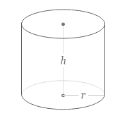

In what concerns the continuous evaluation solving exercises grade during the semester, you should submit until 23:59 of March 3rd
(this exercise will still be available for submission after that deadline, but without couting towards your grade)
[to understand the context of this problem, you should read the class #01 exercise sheet]
Matilda nees your help to solve a problem she was given her primary school.
Write a program that, given the height H and radius R of a cylinder, computess its volume. Use the value of pi (π) as 3.14159 for your calculations.

The input is a line with two integers H (the height) and R (the radius) separated by a single space.
The output should be a single line displaying the volume of the cylinder, rounded to 3 decimal places.
The following limits are guaranteed in all the test cases that will be given to your program:
| 0 < H ≤ 10 | The height of the cylinder | |
| 0 < R ≤ 10 | The radius of the cylinder |
| Example Input 1 | Example Output 1 |
5 2 |
62.832 |
| Example Input 2 | Example Output 2 |
1 4 |
50.265 |